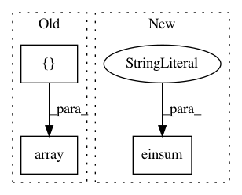

2ffc1c8714980948b42c088880caa64bcc373a5e,geomstats/geometry/special_orthogonal.py,_SpecialOrthogonal2Vectors,matrix_from_rotation_vector,#_SpecialOrthogonal2Vectors#Any#,488
Before Change
n_samples = rot_vec.shape[0]
cos_term = gs.to_ndarray(gs.cos(rot_vec), to_ndim=3, axis=2)
cos_matrix = cos_term * gs.array([gs.eye(2)] * n_samples)
sin_term = gs.to_ndarray(gs.sin(rot_vec), to_ndim=3, axis=2)
sin_matrix = -sin_term * self.skew_matrix_from_vector(
gs.array([[1]] * n_samples))
return cos_matrix + sin_matrix
After Change
rot_vec = self.regularize(rot_vec)
cos_term = gs.cos(rot_vec)
cos_matrix = gs.einsum("...l,ij->...ij", cos_term, gs.eye(2))
sin_term = gs.sin(rot_vec)
sin_matrix = self.skew_matrix_from_vector(-sin_term)
return cos_matrix + sin_matrix
In pattern: SUPERPATTERN
Frequency: 3
Non-data size: 3
Instances
Project Name: geomstats/geomstats
Commit Name: 2ffc1c8714980948b42c088880caa64bcc373a5e
Time: 2020-09-29
Author: nicolas.guigui@inria.fr
File Name: geomstats/geometry/special_orthogonal.py
Class Name: _SpecialOrthogonal2Vectors
Method Name: matrix_from_rotation_vector
Project Name: SINGROUP/dscribe
Commit Name: d1719a0d5e7a5c55ff03d7e7f908ac8daba6ba3d
Time: 2020-10-17
Author: lauri.himanen@gmail.com
File Name: examples/forces/nn_soap.py
Class Name:
Method Name:
Project Name: geomstats/geomstats
Commit Name: 9af960b1abfa1bb7458608915161f1804b04c90e
Time: 2018-10-21
Author: null
File Name: geomstats/special_orthogonal_group.py
Class Name: SpecialOrthogonalGroup
Method Name: skew_matrix_from_vector